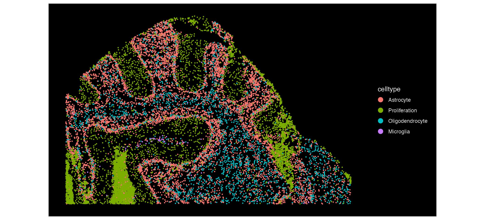
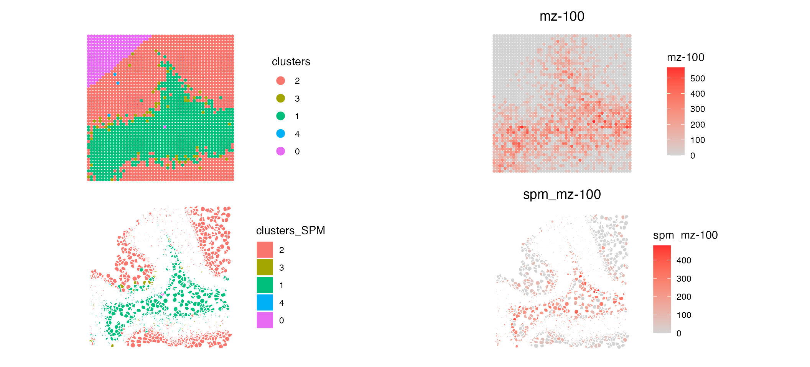
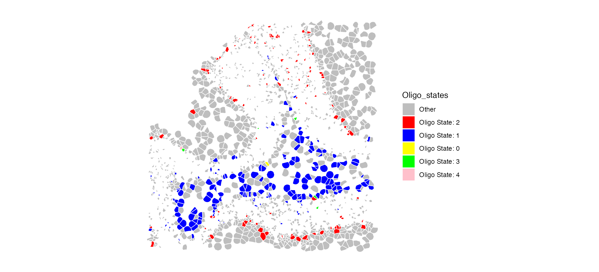
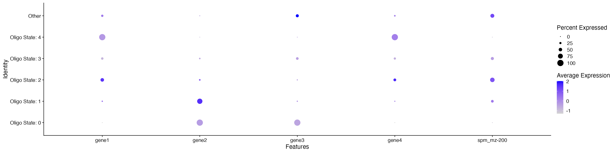

SpaMTP: Simulated Single Cell Multi-Omics Analysis
Source:vignettes/Single_Cell_MultiOmics.Rmd
Single_Cell_MultiOmics.RmdThis vignette will use SpaMTP to integrate single cell resolution spatial transcriptomics data with spatial metabolic data. This vignette will use simulated Xenium (ST) and simulated MALDI-TOF (SM) data.
Author: Andrew Causer
## Install SpaMTP if not previously installed
if (!require("SpaMTP"))
devtools::install_github("GenomicsMachineLearning/SpaMTP")
#General Libraries
library(SpaMTP)
library(Cardinal)
library(Seurat)
library(dplyr)
library(ggplot2)Load Processed Data
Here, we will be using the simulated data which has synthetic clustering and cell type names. The gene and metabolite names are also arbitrary, this data is only used to highlight SpaMTP’s functionally with single cell spatial datasets.
xenium <- readRDS(url("https://zenodo.org/records/17247007/files/Sim_Xenium.RDS?download=1"))
MALDI <- readRDS(url("https://zenodo.org/records/17247007/files/Sim_MALDI.RDS?download=1"))
MALDI <- UpdateSeuratObject(MALDI) # Only Required if SeuratObjects => 5.0.2Visualising Simulated Datasets
We can visualise the simulated datasets and observe the difference in resolution between our single cell ST and lower resolution SM data.
First, lets look at our Xenium data:
ImageDimPlot(xenium, group.by = "celltype", size = 1)
Now, lets look at our MALDI data:
ImageDimPlot(MALDI, group.by = "clusters", size = 1)Based on these plots, we can see that our Xenium data is at a much higher resolution, compared to the MALDI data. We can zoom in and see this in more detail:
Setting Futures for FOV Creation
# Futures may be required to use Seurat's `Crop()` function
library(future)
#>
#> Attaching package: 'future'
#> The following objects are masked from 'package:Cardinal':
#>
#> reset, run
plan("multicore", workers = 16) # Use all 16 cores
#> Warning in supportsMulticoreAndRStudio(...): [ONE-TIME WARNING] Forked
#> processing ('multicore') is not supported when running R from RStudio because
#> it is considered unstable. For more details, how to control forked processing
#> or not, and how to silence this warning in future R sessions, see
#> ?parallelly::supportsMulticore
# Each core can have up to 16 GB of memory (16 GB / 16 cores)
options(future.globals.maxSize = 16000 * 1024^2) # 16 GB per core
# Generate a smaller FOV to look at a zoomed in region of the ST data
cropped.coords.xenium <- Crop(xenium[["segmentations"]], y = c(2000, 3000), x = c(8500, 9500), coords = "tissue")
xenium[["zoom"]] <- cropped.coords.xenium
# Generate a smaller FOV to look at a zoomed in region of the SM data
cropped.coords.MALDI <- Crop(MALDI[["fov"]], y = c(2000, 3000), x = c(8500, 9500), coords = "tissue")
MALDI[["zoom"]] <- cropped.coords.MALDILets visualise this zoomed area now:
# Set the boundary as segmentation for our Xenium data
DefaultBoundary(xenium[["zoom"]]) <- "segmentation"
ImageDimPlot(xenium, group.by = "celltype", fov = "zoom", size = 1)| ImageDimPlot(MALDI, group.by = "clusters", fov = "zoom", size = 2) Looking at our zoomed in FOV the single cell resolution ST provides much
higher levels of detail compared to the SM data.
Looking at our zoomed in FOV the single cell resolution ST provides much
higher levels of detail compared to the SM data.
Mapping Single Cell Resolution ST and SM
We want to eventually map our SM data to our single cell resolution ST data, meaning that for each single cell we will have both transcriptomic and metabolic information. First, we can check the alignment of our datasets.
# Set the boundary as segmentation for our Xenium data
CheckAlignment(ST.data = xenium, SM.data = MALDI, image.slice = "fov",size = 0.05) & coord_flip()Based on this, we can see our datasets are aligned correctly. Next, we will map our SM and Xenium ST data to generate a SpaMTP Seurat object containing metabolite and transcriptomic information per individual cell.
# Set the boundary as segmentation for our Xenium data
MO_data <- MapSpatialOmics(SM.data = MALDI, ST.data = xenium, ST.hires = TRUE, SM.assay = "Spatial",ST.assay = "Xenium", SM.fov = "fov", ST.image = "centroids")Our two datasets have been aligned to each individual cell. Lets visualise the results:
MO_data
#> An object of class Seurat
#> 8 features across 15448 samples within 2 assays
#> Active assay: SPT (4 features, 0 variable features)
#> 1 layer present: counts
#> 1 other assay present: SPM
#> 3 spatial fields of view present: centroids segmentations zoomThe multi-omic SpaMTP Seurat object now contains two assays, ‘SPT’ and ‘SPM’ which stores the transcriptomic and metabolomic data respectively.
head(MO_data, n = 3)This object also has the combined metadata from both original objects. The metadata associated with our original SM object is marked by “_SPM”.
| orig.ident | nCount_Xenium | nFeature_Xenium | celltype | SPM_pixels | nCount_SPM | nFeature_SPM | orig.ident_SPM | nCount_Spatial_SPM | nFeature_Spatial_SPM | clusters_SPM | nCount_SPT | nFeature_SPT | |
|---|---|---|---|---|---|---|---|---|---|---|---|---|---|
| acficmpm-1 | SeuratProject | 0 | 0 | Astrocyte | 9850_3370 | 80 | 1 | SeuratProject | 80 | 1 | 2 | 0 | 0 |
| acfiiaog-1 | SeuratProject | 0 | 0 | Astrocyte | 9870_3390 | 0 | 0 | SeuratProject | 0 | 0 | 2 | 0 | 0 |
| acfimhih-1 | SeuratProject | 0 | 0 | Astrocyte | 9870_3370 | 58 | 1 | SeuratProject | 58 | 1 | 2 | 0 | 0 |
Next, we can compare the data spatially:
# Set the boundary as segmentation for our Xenium data
DefaultBoundary(MO_data[["zoom"]]) <- "segmentation"
p1 <- ImageDimPlot(MALDI, group.by = "clusters", fov = "zoom", size = 1.5, dark.background = F)/ ImageDimPlot(MO_data, group.by = "clusters_SPM", fov = "zoom", dark.background = F)
p2 <- ImageFeaturePlot(MALDI, features = "mz-100", fov = "zoom", size = 1.5, dark.background = F)/ ImageFeaturePlot(MO_data, features = "mz-100", fov = "zoom", dark.background = F)
p1|p2
Comparing the mapped data to the original SM data we can see that the spatial pattern of both clusters and metabolite (‘mz-100’) match. Now that our data is mapped to single cell resolution we have a much more detailed visualisation of SM based clustering across our simulated tissue sample.
SM data indicates the metabolic functioning of a cell, and based on this we can identify cell types with different metabolic states:
table(MO_data$clusters_SPM, MO_data$celltype)
#>
#> Astrocyte Microglia Oligodendrocyte Proliferation
#> 2 3551 63 596 3472
#> 3 232 2 26 2329
#> 1 2743 34 1677 560
#> 4 8 0 1 14
#> 0 2 0 1 137Looking at Oligodendrocytes for example, we can identify different subtypes based on their metabolic activity.
MO_data$Oligo_states <- ifelse(MO_data$celltype == "Oligodendrocyte", paste0("Oligo State: ", MO_data$clusters_SPM), "Other")
ImageDimPlot(MO_data, group.by = "Oligo_states", fov = "zoom", dark.background = F, cols = c("grey", "red", "blue", "yellow", "green", "pink"))
 This dotplot may suggest that Oligo State 1 and 2 are different cell subtypes based on their differential expression of gene1/gene2 and mz-200 (Note: this is synthetic data and has no biological context - results only used as example).
An additional features of having multi-omic data mapped to the same coordinates is that we can visualise the expression of both metabolites and gene expression on a single plot.
ImageFeaturePlot(MO_data, features = "mz-200", molecules = c("gene1", "gene2"), fov = "zoom", mols.cols = c("blue", "green"))Analysing this spatial plot, there is a clear correlation between ‘mz-100’ and ‘gene1’ suggesting there interaction or similar functionality.
Session Info
sessionInfo()
#> R version 4.4.1 (2024-06-14)
#> Platform: aarch64-apple-darwin20
#> Running under: macOS 15.5
#>
#> Matrix products: default
#> BLAS: /Library/Frameworks/R.framework/Versions/4.4-arm64/Resources/lib/libRblas.0.dylib
#> LAPACK: /Library/Frameworks/R.framework/Versions/4.4-arm64/Resources/lib/libRlapack.dylib; LAPACK version 3.12.0
#>
#> locale:
#> [1] en_US.UTF-8/en_US.UTF-8/en_US.UTF-8/C/en_US.UTF-8/en_US.UTF-8
#>
#> time zone: Europe/Dublin
#> tzcode source: internal
#>
#> attached base packages:
#> [1] stats4 stats graphics grDevices utils datasets methods
#> [8] base
#>
#> other attached packages:
#> [1] future_1.67.0 ggplot2_4.0.0 dplyr_1.1.4
#> [4] Seurat_5.3.0 SeuratObject_5.2.0 sp_2.2-0
#> [7] Cardinal_3.8.3 S4Vectors_0.44.0 ProtGenerics_1.38.0
#> [10] BiocGenerics_0.52.0 BiocParallel_1.40.2 SpaMTP_1.1.0
#>
#> loaded via a namespace (and not attached):
#> [1] RColorBrewer_1.1-3 rstudioapi_0.17.1 jsonlite_2.0.0
#> [4] magrittr_2.0.4 spatstat.utils_3.2-0 farver_2.1.2
#> [7] rmarkdown_2.29 fs_1.6.6 ragg_1.5.0
#> [10] vctrs_0.6.5 ROCR_1.0-11 spatstat.explore_3.5-3
#> [13] RCurl_1.98-1.17 htmltools_0.5.8.1 sass_0.4.10
#> [16] sctransform_0.4.2 parallelly_1.45.1 KernSmooth_2.23-26
#> [19] bslib_0.9.0 htmlwidgets_1.6.4 desc_1.4.3
#> [22] ica_1.0-3 plyr_1.8.9 plotly_4.11.0
#> [25] zoo_1.8-14 cachem_1.1.0 igraph_2.1.4
#> [28] mime_0.13 lifecycle_1.0.4 pkgconfig_2.0.3
#> [31] Matrix_1.7-4 R6_2.6.1 fastmap_1.2.0
#> [34] fitdistrplus_1.2-4 shiny_1.11.1 digest_0.6.37
#> [37] patchwork_1.3.2 tensor_1.5.1 RSpectra_0.16-2
#> [40] irlba_2.3.5.1 textshaping_1.0.3 labeling_0.4.3
#> [43] progressr_0.16.0 spatstat.sparse_3.1-0 httr_1.4.7
#> [46] polyclip_1.10-7 abind_1.4-8 compiler_4.4.1
#> [49] proxy_0.4-27 withr_3.0.2 S7_0.2.0
#> [52] tiff_0.1-12 DBI_1.2.3 fastDummies_1.7.5
#> [55] MASS_7.3-65 classInt_0.4-11 units_0.8-7
#> [58] tools_4.4.1 lmtest_0.9-40 httpuv_1.6.16
#> [61] future.apply_1.20.0 goftest_1.2-3 glue_1.8.0
#> [64] nlme_3.1-168 EBImage_4.48.0 promises_1.3.3
#> [67] sf_1.0-21 grid_4.4.1 Rtsne_0.17
#> [70] cluster_2.1.8.1 reshape2_1.4.4 generics_0.1.4
#> [73] gtable_0.3.6 spatstat.data_3.1-8 class_7.3-23
#> [76] tidyr_1.3.1 data.table_1.17.8 xml2_1.4.0
#> [79] spatstat.geom_3.6-0 RcppAnnoy_0.0.22 ggrepel_0.9.6
#> [82] RANN_2.6.2 pillar_1.11.1 stringr_1.5.2
#> [85] spam_2.11-1 RcppHNSW_0.6.0 limma_3.62.2
#> [88] later_1.4.4 splines_4.4.1 lattice_0.22-7
#> [91] survival_3.8-3 deldir_2.0-4 tidyselect_1.2.1
#> [94] CardinalIO_1.4.0 locfit_1.5-9.12 miniUI_0.1.2
#> [97] pbapply_1.7-4 knitr_1.50 gridExtra_2.3
#> [100] matter_2.8.0 svglite_2.2.1 scattermore_1.2
#> [103] xfun_0.53 Biobase_2.66.0 statmod_1.5.0
#> [106] matrixStats_1.5.0 fftwtools_0.9-11 stringi_1.8.7
#> [109] lazyeval_0.2.2 yaml_2.3.10 kableExtra_1.4.0
#> [112] evaluate_1.0.5 codetools_0.2-20 tibble_3.3.0
#> [115] cli_3.6.5 ontologyIndex_2.12 uwot_0.2.3
#> [118] xtable_1.8-4 reticulate_1.43.0 systemfonts_1.2.3
#> [121] jquerylib_0.1.4 Rcpp_1.1.0 globals_0.18.0
#> [124] spatstat.random_3.4-2 zeallot_0.2.0 png_0.1-8
#> [127] spatstat.univar_3.1-4 parallel_4.4.1 pkgdown_2.1.3
#> [130] dotCall64_1.2 jpeg_0.1-11 bitops_1.0-9
#> [133] listenv_0.9.1 viridisLite_0.4.2 e1071_1.7-16
#> [136] scales_1.4.0 ggridges_0.5.7 purrr_1.1.0
#> [139] rlang_1.1.6 cowplot_1.2.0 shinyjs_2.1.0